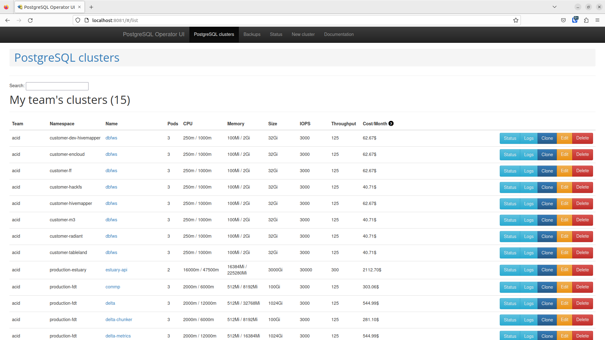

Databases
PostgreSQL on Kubernetes (Phosphophyllite)
We have various PostgreSQL clusters hosted on Phos k8s, including the most important one - estuary-api. Here's how to examine and manage them.
Listing PostgreSQL clusters
Once you have kubectl configured and set up for access to phosphophyllite, you can access the Postgres Operator UI using kubectl port forwarding. This will give you a view of all PostgreSQL clusters running in Phosphophyllite, as well as the ability to spawn new PostgreSQL clusters if needed.
You can read the quickstart guide for Postgres Operator for more information, but what you probably want is the following one liner:
kubectl port-forward svc/postgres-operator-ui 8081:80 -n postgres
Run that in a terminal (screen or tmux if you need it to run for a while) and in your favourite browser, navigate to http://localhost:8081 to open Postgres Operator UI.

Here be dragons...
Postgres Operator UI will allow you to do lots of potential harm to customer and core PostgreSQL clusters in very short order with very little warning. Please be careful and try to know what you're doing - if you are not sure - ask!
You will see all the PostgreSQL clusters we operate. You can click Status to check on the status of that particular cluster, Logs to view logs related to that cluster from the perspective of the Postgres Operator (as opposed to the service itself), Clone to create a new cluster from the latest available daily backup, Edit to edit the cluster or Delete to attempt to delete it.
When 'Delete' doesn't mean Delete...
Note that deleting a PostgreSQL cluster is not as easy as clicking that handy "Delete" button. There are delete protections in place that prevent accidental deletions of PostgreSQL clusters, as well as backups that will (eventually) need to be purged when deleting a cluster. For more, see "Deleting clusters" down below.
Accessing databases - how do I access a database cluster on Kubernetes to check on its status?
- Open Rancher
- Go to the namespace containing the cluster you want to check on.
- Find one of the database pods (such as
dbfws-0) for the database cluster in question, click the three dots (⋮) and click> Execute Shellto get a shell inside the container. - Run
patronictl listand check that all replicas are on the same timeline (TL) and have noLag in MB.
Accessing databases - how do I use a database within a database cluster?
Access to databases requires sslmode=prefer or sslmode=on. sslmode=disable is not supported.
- Inside Kubernetes: You can access the database using the hostname
servicename.namespace- such asdbfws.hivemapper- or justservicenameif you are inside the same namespace as that service. Use the standard PostgreSQL port (5432) unless told otherwise. - Outside Kubernetes: To access a database outside Kubernetes, we use MetalLB to expose a normal private IP address that can be accessed outside of Kubernetes.
In order to access a database outside of Kubernetes, you will need the following settings in the spec:
spec:
allowedSourceRanges:
- 10.24.0.0/16 # FDI main private IP space
- 10.42.0.0/16 # Internal Kubernetes private IP space
enableMasterLoadBalancer: true
Deleting a PostgreSQL cluster
From time to time you may want or need to delete a database cluster. This may be as a result of a customer leaving or being terminated, or a cluster simply no longer being needed by either the customer or our team.
Tread carefully!
Deleting a PostgreSQL cluster is an irreversible action. Make sure you either have tested and working backups before you proceed, or are 100% sure you do not need the data.
In order to delete a cluster, you must annotate the PostgreSQL CR with two annotations delete-date and delete-clustername. You can do this either through the Postgres Operator UI or through Rancher.
Create an annotation called delete-date with the date in YYYY-MM-DD format, and an annotation called delete-clustername with the exact name of the cluster as defined in the CR.
CPI is a special case
CPI-deployed PostgreSQL clusters must first be "orphaned" via removal from values.yaml before they can be deleted in this way, and dbfws clusters (the default cluster included for each customer) CANNOT be deleted in this way at all. This is not exactly an intentional choice - Helm does not allow for outside modifications to its resources and will overwrite any changes you make to resources it manages. Thus, your annotations will be overwritten before they take effect.
Once you have applied the annotations, you may delete the PostgreSQL cluster using any normal means (via Rancher, using kubectl or using the Operator UI).
Deleting clusters does not cleanup or remove their backups. Note that you may cause undesired behaviour (restore from backup) if you create a new cluster with the same exact name and namespace as a previous cluster that was not cleaned up.
PostgreSQL VM clusters
There are two main PostgreSQL clusters operating outside of Kubernetes. These are powered by a combination of etcd, patroni, postgresql and haproxy.
List of clusters
- Estuary Hosted Infrastructure (prod-ehi): Hosted on prod-ehi-db[01:03].estuary.tech
- Estuary Bootstrap Infrastructure (prod-ebi): Hosted on prod-ebi-db[01:03].estuary.tech
Estuary Hosted Infrastructure (EHI) DB
The EHI database cluster runs database services for the following:
- EstuaryV2: Delta, Delta DM, Edge-UR, Edge-URID
- EstuaryV1: Shuttle 12, Edge Carriers,
- Gitea
Estuary Bootstrap Infrastructure (EBI) DB
The EBI database cluster runs database services for the following:
- AWX automation
- Metal as a Service (MAAS) machine deployment
- Nautobot
Accessing databases - how do I access a database cluster to check on its status?
SSH into one of the servers that serve the database cluster. Here's an example using EHI:
ssh ubuntu@prod-ehi-db01.estuary.tech
Elevate to root:
sudo su -
Use patronictl to list the database members.
root@prod-ehi-db01:~# patronictl -c /etc/patroni/prod-ehi-db01.estuary.tech.yml list
+ Cluster: prod_ehi_db ------+------------+---------+---------+-----+-----------+
| Member | Host | Role | State | TL | Lag in MB |
+----------------------------+------------+---------+---------+-----+-----------+
| prod-ehi-db01.estuary.tech | 10.24.3.20 | Leader | running | 273 | |
| prod-ehi-db02.estuary.tech | 10.24.3.21 | Replica | running | 273 | 0 |
| prod-ehi-db03.estuary.tech | 10.24.3.22 | Replica | running | 273 | 0 |
+----------------------------+------------+---------+---------+-----+-----------+
Accessing databases - how do I use a database in a VM cluster?
You can access the databases in the VM clusters using postgres-ehi.estuary.tech and postgres-ebi.estuary.tech (both are CNAMEs which point at the production HAProxies).
The chosen TCP port is what determines which PostgreSQL cluster you connect to - 51432 for EBI, 52432 for EHI.